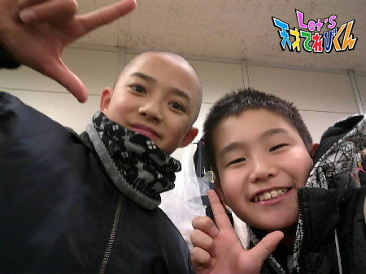
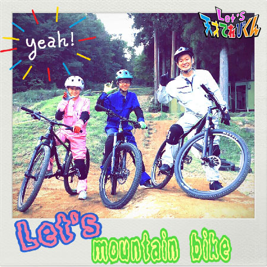
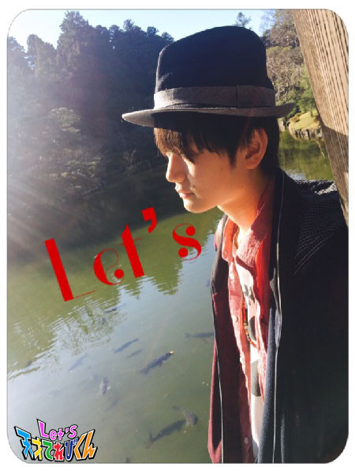
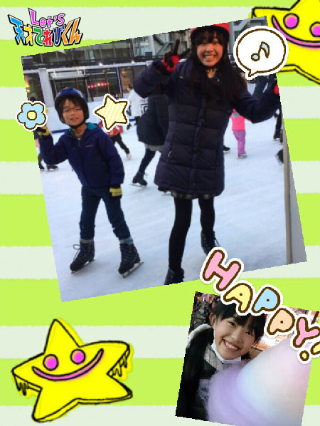
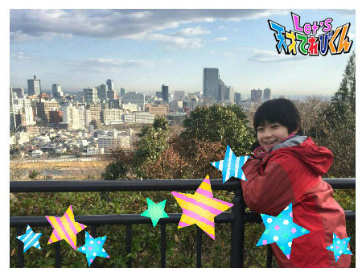
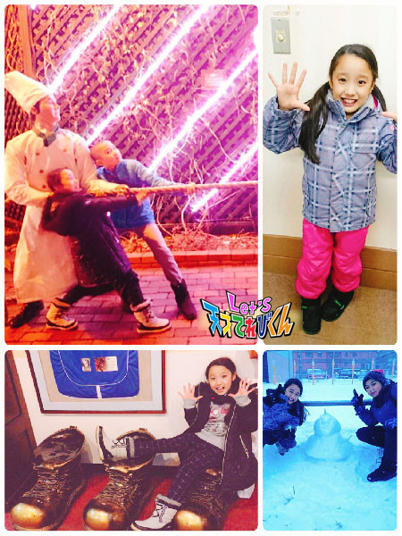
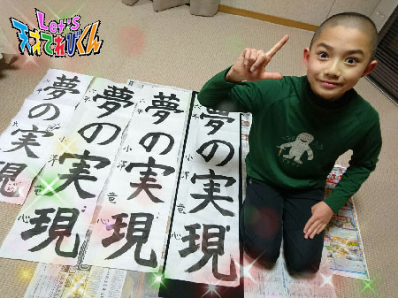
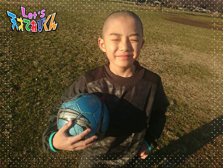
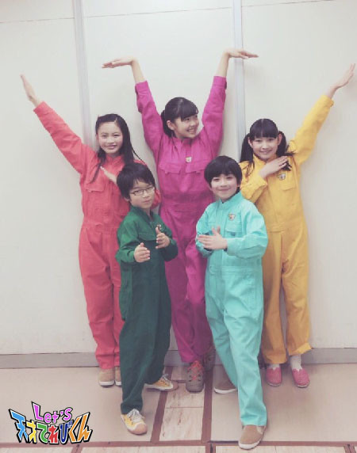
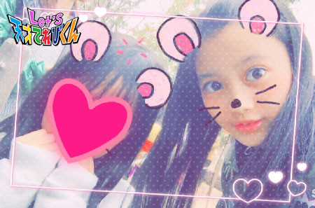

てれび戦士
2017年02月20日 (月)ITAISENの○○さん［胡内奏芽］
こんにちは。
胡内です。
最近、学校で毎週金曜日に、
鬼ごっこをして遊んでいます。
鬼に見つからないように、存在感を消すことを心がけていますが、
すぐ捕まってしまいます。
もう少し研究しなければ！
鬼ごっこ、最高に楽しいです。
さて、
今回のテーマは「 ITAISENの○○さん 」です。
んー、誰にしようかな？（ ワクワク ）
誰にしようか迷うー！！！
んー、じゃあ！！！
あの方々。。
「 中田博士、慎吾ちゃん 」
いつも、どちゃもん救出のためにミッションを手助けしてくれて、
ありがとうございます。
２人はいつも一緒にいて、仲も良いですね (*^^*)
そして、本当に息がぴったり！！
ぼくは２人の姿を見ると、がんばってミッションをこなそうと思えます！！！
ちょっと変なこと言っちゃったときも、
中田博士と慎吾ちゃんが笑ってくれて、すごくうれしいです。
２人ともずっと尊敬しています。
こないだ竜心くんと一緒に写真撮りましたー (*^^*)！！

それでは、またー。
投稿者:胡内奏芽 | 投稿時間:18時45分 | 固定リンク
2017年02月17日 (金)ITAISENの○○さん［桐畑カレン］
こんにちは。
カレンです (*^^*)
先日、ふぐを食べに行きました。
ふぐといえば、山口どちゃもん・ふくぺらぶうですね。
元気かな～。
実は三重県も「 あのりふぐ 」というふぐが有名なんですよ。
もしかしたら、どちゃとぴあにいるかもしれませんね！

さて、今日は、なかなかお会いすることができない
ITAISENのジョンテさんについて書きたいと思います (^^)
ジョンテさんと初めてお会いしたのは、約３年前のこと。
『 にっぽん・なんばぁず 』のダンスを教えてもらったときでした。
それまでダンスなどしたことがなかった私・・・。
なにがどうなっているのか・・・
次にこうして、こうなって、こう？？
頭の中は大パニックで、カクカクした変な動きをしていた私に、
やさしい笑顔で教えてくださったのがジョンテさんでした。
『 めしどき むしゃりずむ 』のときも、
ダンスができなくて変顔でごまかした私に、
「 まあ、困ったわ 」
と苦笑いしながらも、やさしく教えてくださいました。
ジョンテさんにダンスを教えてもらったおかげで、
学校の運動会のダンスでは、びっくりするほどキレッキレに踊れるようになりました。
↑ 自分のなかでのキレッキレですよ (#^.^#)
あっ、だけど、お母さんも運動会のダンスでは、
みんなよりずれている子を探せばすぐに私を見つけられたのに、
ずれずに踊っていたからなかなか探せなかったと言っていました！
ふんわりしたあたたかい空気がジョンテさんの周りにあって、
やさしい笑顔のジョンテさん。
ダンスがとっても素敵なジョンテさん。
高いヒールの靴をはいてしなやかに踊るジョンテさん。
あこがれであり、大好きです《*≧∀≦》
投稿者:桐畑カレン | 投稿時間:18時45分 | 固定リンク
2017年02月16日 (木)ITAISENの○○さん［皆川寧々］
みっなさ～ん、
こんばんは、＊寧々＊です (｡・u・｡)/☆
本日のテーマは「 ITAISENの◯◯さん 」です。
麿長官、大野課長、虎南さん、
中田博士、慎吾ちゃん、蝶野さんに、アンドロイド、てれび戦士のみんな。。。
全員のことを書きたいけど、
今日はこの方のことを書くことにしました＿〆(*・u・*)
「 アンドロイドの益子18号 」
初めてあったとき、
｢ なまりが、強っ！なに言っているんだろう。。。｣
とびっくりしました。
でも、なんて言ってるかわからないときもあるけど、
しゃべりだすとものすごく面白くて、
優しくて、いつもニコニコ見守ってくれて
お父さんみたいでした！
栃木県編のミッション
“ マウンテンバイクをマスターせよ！”のとき、
慣れないでこぼこ道とマウンテンバイクで、
なかなかコツがつかめず苦戦してたら、
「 がんばって～！！」「いけっよ～（ いけるよ～ ）！」と応援してくれたり、
“ 猿まわしでとちぼるたの機嫌を直せ！”では、
たくさんのお客さんの前でショーをするのにとても緊張していたとき、
「 よぉ～しがんばれっ！ 」とはげましてくれたり、
ステージで｢ ごめんね。ごめんね～ ｣と言って笑わせてくれたり、、、
益子18号のあやまる機能に、何度も元気と勇気をもらいました！
益子18号の｢ ごめんね。ごめんね～ ｣
ってあやまる機能が大好きです！
くしゃって笑う笑顔も面白くて、優しくて、
大好きです！
これからもたっくさん
笑わせてください♪ ( ´▽｀)

それでは＊寧々＊でした♪
投稿者:皆川寧々 | 投稿時間:18時54分 | 固定リンク
2017年02月15日 (水)ITAISENの○○さん［瀧澤翼］
こんにちは！
瀧澤翼です！
今回のテーマは、「 ITAISENの○○さん 」です。
中田博士&藤森助手
これまでお二人とてれび戦士でいろいろなミッションをしてきましたが、
一番印象に残ってるのは、
僕がてれび戦士なりたてのときにした、きもだめしのミッションです。
僕はすごくビビリなのでいろんな仕掛けにすごく驚き、泣きそうでした。
そして、きもだめしが終わると別室でお二人が待っていて
「 よくがんばったな 」と言ってくれたので、
すごく安心して涙が止まらなかったです（ 笑 ）
その優しさのおかげで僕は、こんなに大きくなりました。
ただそんな優しいお二人ですが、少し苦情があります。
それは、クイズなどで自信がある問題のときに限って
手をあげてもなかなか指してくれないところです。
手をあげているのは僕だけなのに
中田博士が僕の方を見て、笑いながら他の人を指していました（ 笑 ）
ですが、とても優しくて面白くてパーフェクトなお二人が大好きです！
これからもよろしくお願いします！
たまには思いを伝えるのもいいですね！
と、いうわけで今回はここまで！
Let's ITAISEN！！！！

投稿者:瀧澤翼 | 投稿時間:18時45分 | 固定リンク
2017年02月14日 (火)ITAISENの○○さん［黒川桃花］

こんにちは。黒川桃花です。
先日、つじ君とスケートに行きました！
私はすごく久しぶりだったんですが、
５年ぶりくらいかな、
いやぁ楽しかったです！！
すべりすぎて次の日、体中痛かったです。
さて、今回のお題は、「 ITAISENの○○さん」です。
私は大野課長の、いつも寒いけれどたまに面白い「 だじゃれ 」が意外と好きです。
私もだじゃれを考えてみたけれど、なかなか難しくて、、
大野課長すごいなぁと尊敬しています。
だじゃれを言ってないときの大野課長は
優しくてカッコイイですよ (^.^)
虎南分析官は、いつも万能リモコン・オテモトで
いろいろなことを分析してくれるのですが、
そのスピードのはやいこと！！！
すぐに手がかりになる場所を探し出してくれて、
本当に頼りになります！
虎南分析官も優しくてカッコイイです！！
ITAISENのみなさん！
みんな大好きです ＼(^o^)／
投稿者:黒川桃花 | 投稿時間:18時45分 | 固定リンク
2017年02月13日 (月)私の"ファイト"［柿澤仁誠］
こんにちは (^^)
にまです！！
今回のテーマは「 私の“ ファイト ”」
ぼくが今、一番気合いをいれてるのが、早起きです！
寒い冬の朝は、起きるのがつらい (><) ですが、
休みの日はなぜか？？？？ビシッとすぐに起きられます (^^)v
学校の日も一度でちゃんと起きられればいいのですが、
なかなか気合いが入りません (^^;
ファイトで「 パッ！！ 」と起きられるように、
気合いをいれたいと思います！
もう１つ、今がんばってるのは、
ダンスの発表会の練習です。
でもそのダンスは、ふりつけをキレイに表現するのがむずかしいです！！
でも、できなかったところが
少しずつできていくと、とてもうれしいです！！！！
まだまだできていないところがあるので、
そこをがんばりたいです！！
それではまた (^_^)/~~

投稿者:柿澤仁誠 | 投稿時間:18時45分 | 固定リンク
2017年02月10日 (金)私の"ファイト"［原田明莉］
こーんにーーーちわーーー！
とっても寒いですね！
もう私はこの冬２回目の雪を見ました！
でも温かい食べものがとってもおいしい時期でもあります ^ ^
それでは本題に入ります！
今回のテーマは
「 私の“ ファイト ”」
です！
私のファイトは２つあります！
まず１つめはやっぱり空手です！
初めて念願の強化選手になれて、
練習会などに行くとみんなとても強くて
まだまだ自分の実力がとどいてないことを感じます！
なので全国大会にむけて
体作りや、うまい試合運びができるように
年明けで体がまだなまりつつあるところですが
必死に努力して！！！
がんばっていきます！！！
これが私の１つめのファイトーーーーーーです！！！
２つ目のファイトは
小学２年生の弟がいるんですが
いまだに九九ができない、、、
なので！
１ヶ月後までには
弟が九九を完ぺきに言えるように
私もがんばりたいと思います！
これが２つめの私のファイトーーー！！！でした！！！
こうやってがんばることを目標に持つことはいいことですよね！
なので、みなさんも「 私の“ ファイト ”」を
Let's find（ 見つけましょう ）！！！
投稿者:原田明莉 | 投稿時間:18時45分 | 固定リンク
2017年02月09日 (木)私の"ファイト"［稲垣芽生］
みなさま、こんにーちは！ (*^^*)
最近、寒いですね～ ( ;∀;)
インフルエンザや風邪には気をつけないとです。
家では「 手洗いうがい 」が絶対です！
しないとリビングに入れてもらえません。
去年は一度も風邪をひかなかったですよ。
今年も「 手洗いうがい 」を基本に風邪に負けません！！！！！！！
今回のテーマ『 私の“ ファイト ”』です。
私のファイトは、
今年、絶対に鉄棒で〈 空中前まわり 〉を成功したいです。
空中前まわりは、体を起き上がらせるときに
筋肉が必要なので、そこが難しいです・・・
あと勢いです。
どうしてもできないのです・・・
成功したらどんなにうれしいか、気持ちがいいことか。
がんばるぞーファイト！
あとは夢に向かってがんばります。
失敗してもあきらめずに、前へ進みたいと思います。
失敗は成功のもと！！ですもん。
「 ファイト！ファイト！ 」
てれび戦士として
もっと成長しなくては。がんばります。
みなさんのファイトはなんですか？
一緒にがんばりましょう！！
Let's！！！！！！！

投稿者:稲垣芽生 | 投稿時間:18時54分 | 固定リンク
2017年02月08日 (水)私の"ファイト"［小澤竜心］
こんにちは！竜心です。
冬休みにおじいちゃんの家で、書き初めをしました。
課題は・・・【 夢の実現 】
書いたら、今年もがんばるぞー！
って、ファイトがわいてきました v(^o^)

ぼくの『 私の“ ファイト ”』は、スポーツ！
特に、「 サッカー 」と「 バレーボール 」です。
学校のサッカー部は、
１年生の頃から６年間やっています。
ぼくは最初、未経験でなにもわからなかったけど、
コーチや先輩がいろいろ優しく教えてくれたので、
サッカーが大好きになりました♪
練習に行けないこともあったけど、
行くと友達がおもしろくて、
続けることができました o(^-^o)(o^-^)o
後輩のみんなもこれからも楽しんで、
がんばって続けてほしいです！

それから、お母さんがやっているバレーボール。
たまに練習に参加して教えてもらって、
興味がわいてきています。
バレーボールでは目標があります！！
それは、中学校のバレーボール部に入って、
アタッカーになることです p(^^)q
試合や練習のときにお母さんがアタックを打って、
得点をとる姿がとてもかっこよくて、
「 ぼくもなりたい！ 」と、思いました。
なので、いっぱい食べて、寝る前に牛乳を飲んで、
身長を伸ばして強い体をつくりたいです (#^.^#)
中学生も、部活動でスポーツをがんばるぞ～！！o(^o^)
投稿者:小澤竜心 | 投稿時間:18時45分 | 固定リンク
2017年02月07日 (火)私の"ファイト"［皆川寧々］
みっなさ～ん、
こんばんは、＊寧々＊です (｡・u・｡)/☆
ぎょぎょぎょ魚！
天てレンジャーズ・・・なんて笑笑
北海道の週では「 究極（ きゅうきょく ）の鮭 」を
みんなでゲットしました！！
さかなクンさんのお話は、
身近な魚たちの知られざるひみつをたくさん知ることができて
とてもためになりました。
水族館でもっともっといろんな魚を観察したくなりました。
さてさて今日のテーマは、
『 私の“ ファイト ”』
今日は私が応援しているあの人を
ご紹介いたしまぁ～す！！
それは、５歳下の妹のことです。
去年の春、小学１年生になりました。
新しい環境で初めてのことばかり、
大変なこともたくさんあるのに、
毎日すごくがんばっていて。。。
去年、夏前から
私と一緒のミニバスケットボールチームにも入り、
バスケも始めたんです！
まだまだ１年生だから、
うまくできないと「 やめたい 」とか「 行きたくない 」とか言うんですけど
練習に行ったら行ったで、
いつもちゃんとがんばってるんです ( />u=)/ ”(*°u°*)yエライ
この前も他学年と混ざってミニゲームの練習をしていたとき、
３年の男の子につきとばされていて、床にどーんとハデに転びました。
「 大丈夫かな (((;°▽°)) 」と遠くから心配しながら見守っていたら、
泣くのをこらえて最後まで練習を続けたんです。。。
さすが私の妹・・・ (o´u`o)
小さい体で一生懸命がんばっていて泣
生意気なときもたまにはあるけど
なんだかんだいって大好きな妹です～
４月から私は中学生になるので、
バスケも学校も別々になってしまうけど、
時間のある時に一緒にバスケを練習したりしたいなぁと思います！
妹に～～～ファイト！！！

それでは＊寧々＊でした♪
投稿者:皆川寧々 | 投稿時間:18時45分 | 固定リンク
ページの一番上へ▲